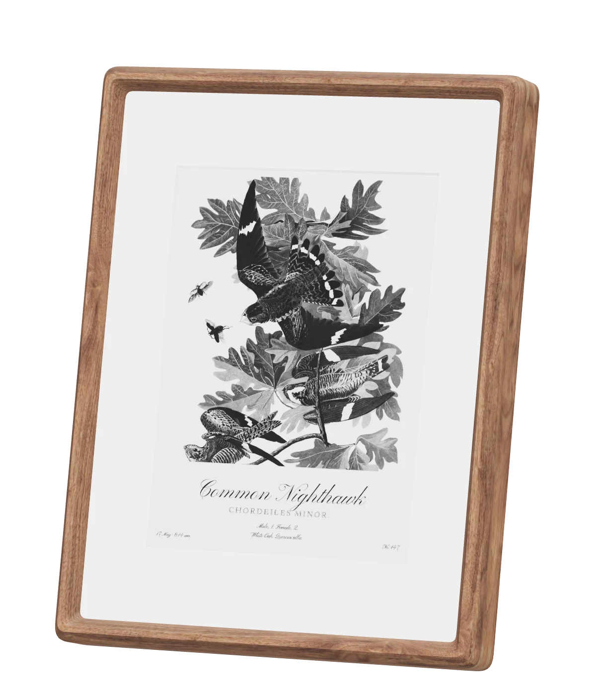

Pre-order Featherframe
Ships November 2026.
Ships November 2026
Featherframe is a framed e-paper display. When a species is detected near your home, it shows John James Audubon's illustration of it, from The Birds of America.

435 hand-colored engravings by John James Audubon. Never AI unless you turn it on.
E-paper reflects light like a printed page and holds its picture without power.
Hosting is included with every frame. No camera, and no app to install.
01
Three steps, all automatic. The frame wakes, updates and sleeps, and runs for months on a charge.

A BirdWeather station near you, or your own BirdNET-Go box on the porch.
One of 435 illustrations from The Birds of America (1827–38), matched to the species heard.
E-paper holds the picture without power, so the frame only wakes to change it.
02
Each illustration carries its species, its Latin name and Audubon's own legend, set the way the original folio set them.


After quiet hours begin, the frame shows every species heard that day, numbered and keyed like a page from the folio.

03
The same walnut frame in two sizes. Choose sixteen shades of gray or six inks.

10-inchSixteen grays · 232 × 295 mm
13-inchSix inks, full color · 295 × 371 mm
Your frame is set up and updated for you. No subscription.
Add one to detect the species in your own yard instead of at a nearby station.
Charges over USB-C, or stays plugged in.
04
From BirdWeather, a public network of listening stations. You choose a station near you when you set up the frame. With a BirdNET-Go box, they come from a microphone at your own home instead.
Yes. The frame joins your Wi-Fi to fetch each new illustration. After setup, it needs nothing else.
Months between charges, depending on how often it updates. It charges over USB-C, and it can also stay plugged in.
Audubon painted 435 species, which covers most common species in North America. For the rest, the frame shows the species' name, set in the same type as the illustrations. You can choose to have an AI draw an illustration in Audubon's style instead, using your own OpenAI key. It's off by default, and every AI illustration is marked ✦.
Hosting is the service that picks each illustration and sends it to your frame. It's included with every frame, with no subscription. If you'd rather run it yourself, the software is open source.
The frame has no camera and no microphone. It only receives pictures. Your account holds your frame's settings and the species it has shown. Nothing is sold or shared.
Ships November 2026.
Featherframe is open source. Build one from a Seeed ePaper kit and run the server beside your BirdNET.